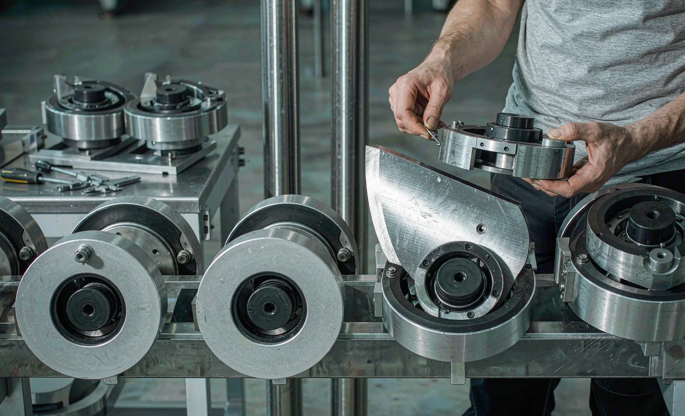
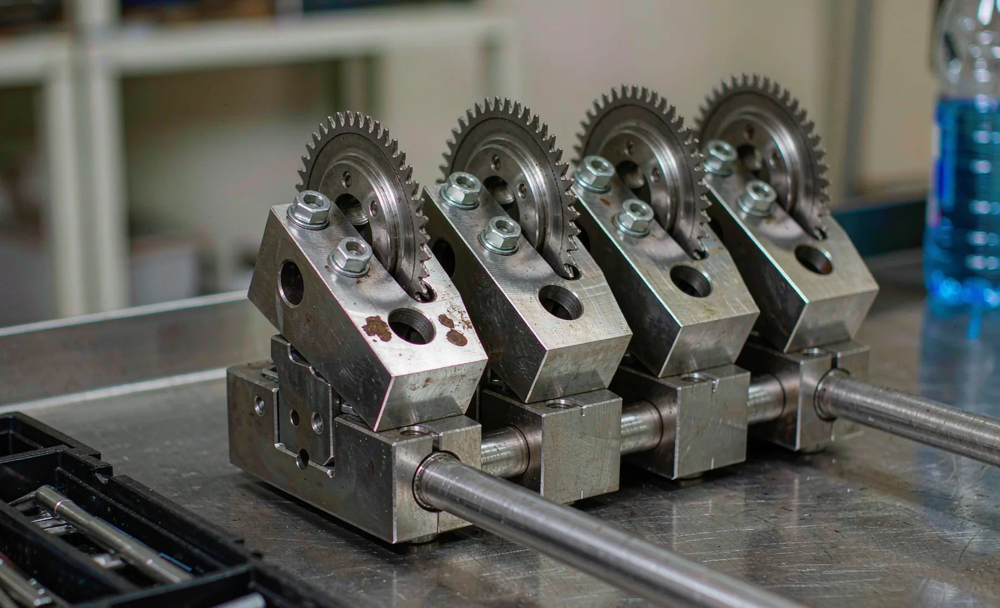

Published September 19, 2026 | By HDPTH Technical Editorial Team

Converters are being pushed one way: shorter orders, more SKUs, tighter delivery windows. A machine bought for one long run a day behaves very differently from the same machine asked to produce six orders before lunch. In that environment the specification that matters is not the top speed on the datasheet but the elapsed time between the last good roll of one order and the first good roll of the next. This guide breaks that interval down and sets out what to ask before you sign.
Why changeover time decides profitability in short-run converting
Capacity is not what a machine can do at full speed; it is what it delivers across a week. Every minute stopped is capacity permanently gone — you cannot recover it by running faster later. Changeover is the largest planned stop in most converting plants and the one most often under-specified at purchase: buyers negotiate hard over 20 m/min of top speed, then accept a machine whose changeover eats an hour and a half per order. On a plant running five orders a day, an hour saved per changeover is five hours of production. See OEE and downtime data for the accounting.
The four levers that compress a changeover
Four design features attack different parts of that stack, and they work best together:
- Quick-change knife holders: lever or single-fastener clamping that lets a holder be released, repositioned and re-clamped without dismantling the beam, removing tool time and the risk of a holder refitted inaccurately.
- Pre-set holder banks: a second set of holders gauged on a bench fixture while the machine is still producing, so the pattern arrives already correct and the machine-side task becomes swap-and-go. See knife holder mounting.
- Recipe recall: one stored record per product carrying slit widths, knife method, tension profile, taper, lay-on pressure, length counter and core settings. Without it, an operator re-enters dozens of values by hand after every setup — each one a chance to be wrong. See recipe management and line data.
- Motorised knife positioning: holders driven to commanded positions automatically and verified by the control system. This turns a 20-minute measuring exercise into a 2-minute cycle, and pays back fastest at high SKU counts — see automatic knife positioning.
| Changeover step | Manual-only machine | Quick change + recipe | What to specify |
|---|---|---|---|
| Stop, unload, clear trim | 5–10 min | 5–10 min | Automatic roll unloading and trim removal |
| Remove old knife set | 10–15 min | 3–5 min | Tool-free holders, indexed clamping |
| Set new slit pattern | 20–40 min | 2–5 min | Pre-set holders plus motorised positioning |
| Enter process parameters | 10–20 min | Under 1 min | Recipe recall by product code |
| Thread web, first-off check | 10–20 min | 5–10 min | Assisted threading, on-machine gauging |
| Total, typical worst case | 55–105 min | 15–30 min | Write the target into the contract |
Turning changeover minutes into OEE and capacity
OEE is availability multiplied by performance multiplied by quality, and changeover sits inside availability. Take a 480-minute shift: if changeovers consume 90 minutes, availability cannot exceed 81% before any other loss is counted. Reduce changeover to 30 minutes and the ceiling rises to about 94%. That 13-point gain is production time costing nothing in energy, labour or material — and it is why a mid-speed machine with good changeover discipline often out-produces a faster one. Count the worst case, not the rehearsed demo.
What to put in the enquiry and the contract
Changeover performance only becomes real when it is specified and measured. Define the reference changeover in writing: material and basis weight, number of slit positions, whether the core size and knife method change, and whether the operator works alone. Ask the supplier to state the target elapsed time to first good roll for that scenario, then require it to be demonstrated during the factory acceptance test with your material, timed by stopwatch and repeated at least twice. Require the recipe library populated with your product codes, not an empty template. And make sure the pre-set fixture, spare holder sets and gauging tools are quoted with the machine — a pre-set strategy without a fixture is only an intention.

Running short orders on a machine built for long ones?
Send HDPTH your order profile — orders per shift, slit positions, materials and core sizes. We will size the changeover package you actually need: quick-change holders, pre-set banks, recipe recall and positioning.
Submit Your Project InquiryQuestions to put to every supplier
- How long does your reference changeover take, to first good roll, with one operator — and can you show it timed?
- Are knife holders tool-free, and how is the set position verified after re-clamping?
- Is a pre-set fixture and a second holder set included, or priced separately?
- What exactly does a recipe store, and how many recipes can be held and backed up?
- Is knife positioning manual, assisted or motorised, and what is the positioning repeatability?
Building the rest of your evaluation?
Continue with our guides to automatic blade changing, knife clearance and overlap and operator training — the human half of a fast changeover.
Contact HDPTHFrequently asked questions
How much changeover time should a slitter rewinder need for a short run?
For a machine equipped with quick-change knife holders, off-line pre-set tooling and recipe recall, a like-for-like width change with the same material should be achievable in 10 to 20 minutes. A manual machine that requires measuring every knife position on the beam and re-threading from scratch typically needs 45 to 90 minutes. The right question for a buyer is not the average but the worst case: the changeover that includes a material change, a core change and a different slit pattern.
What is the difference between quick-change knives and automatic knife positioning?
Quick-change knife holders are mechanical: they let an operator release, slide and re-clamp a holder with a lever or a single fastener, without tools or without removing the shaft. Automatic knife positioning adds a motorised carriage that moves each holder to a commanded position on its own. Quick change reduces the physical work; automatic positioning removes the measuring and the arithmetic. For very short runs with many slit positions, the two are complementary.
Why do pre-set knife holders matter more than the knife change itself?
Because the slowest part of a changeover is rarely the removal of the old knife — it is setting the new one. Measuring a beam of twenty holders with a tape or a gauge, one at a time, is where the minutes disappear, and every measurement is a chance for error. A pre-set holder bank staged on a bench, gauged against a fixture while the machine is still running the previous order, converts an in-machine serial task into an off-line parallel one.
How does changeover time affect OEE and quoted machine capacity?
OEE is availability multiplied by performance multiplied by quality, and changeover time sits directly in availability. If a shift is 480 minutes and changeovers consume 90 of them, availability cannot exceed about 81 percent before any other loss is counted. Cutting changeover to 30 minutes raises that ceiling to roughly 94 percent. On a short-run plant running six orders a day, that difference is more capacity than most speed upgrades deliver.
What should be written into a purchase contract about changeover performance?
Name the changeover scenario in writing: the material, the number of slit positions, whether the core size changes, and the target elapsed time. Require it to be demonstrated during the factory acceptance test with your material, timed by stopwatch, and repeated at least twice. Also require the recipe structure to be delivered populated with your own product codes, not left as an empty template that operators must fill in later.
Sources
- ISO 12100: Risk assessment and risk reduction
- ANSI B11 committee: safety requirements for machinery, including converting machinery
- OSHA: Machine guarding resources for moving webs, rollers and point-of-operation hazards
- EDANA: the European nonwovens industry association — sector guidance and statistics
- ISO 9001: quality management systems